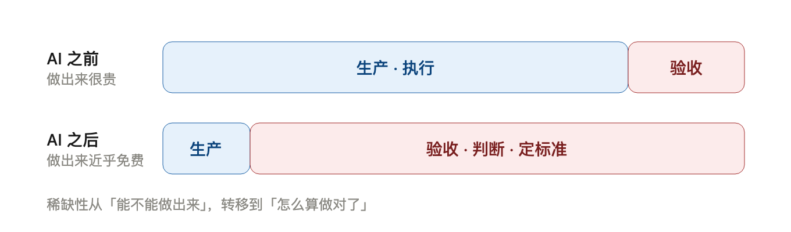
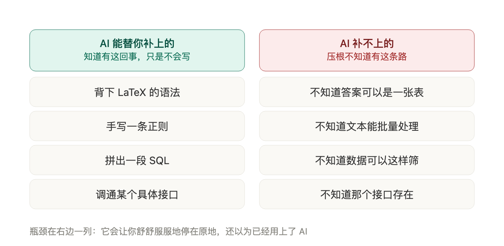

一 场 关 于 效 率 差 的 讲 座
AI 时代，普通人的
「只学概念」清单
不要求任何专业背景
面向所有人 · 越普通越该听
导学
今天的路线图
一个反直觉的现象
——AI 普及，差距反而拉大
被高估的「学提示词」
——为什么它是错的答案
瓶颈迁移
——从「做出来」到「判断对不对」
知道它存在 > 学会它
——已知之未知 vs 未知之未知
三张清单 A / B / C
——可能性地图、判断力、护栏
动手前三问 + 反向清单
——先过这三关
读书与训练
——AI 时代该读什么、练什么
第 一 部 分
一个反直觉的现象
AI 普及了，差距为什么反而拉大？
现象
一个反直觉的观察
AI 普及了，人和人之间的效率差距
没有缩小，
反而拉大了
。
同一把 AI：有人十分钟出活，有人一小时打转；有人做出成果，有人制造需要返工的垃圾。
破题
AI 是常量，不是变量
你和同事，打开的是
同一个对话框
、同一个模型
AI 这一端，是完全拉平的
所以效率差，
不可能产生在 AI 那一端
第一反应「提示词写得不好」—— 我认为是错的，至少被严重高估。
第 二 部 分
被高估的「学提示词」
关于工具的知识，正被快速清零
理由一
提示词，是关于「工具」的知识
工具
每个月都在变
你今天的写法，三个月后人人都会
下一代模型大概率
直接内置
这些技巧
把安全感建立在「工具用法」上，是最不安全的——这是在沙子上盖楼。
理由二
你以为在学技巧，其实在想清需求
写提示词的过程，本质是在回答三个问题：
我要什么 · 边界在哪 · 什么时候算完成
技巧只是载体，
结构化表达
才是有效成分。你以为在学使唤工具，其实在练更底层的能力。
小结
别把时间投在工具用法上
真正的效率差，不在「更会用 AI」。
它藏在别的地方。
下一站：真正发生的事——一次瓶颈迁移。
第 三 部 分
瓶颈迁移
从「做出来」到「判断对不对」
图示
瓶颈迁移：一张图

图1：AI 之前 vs AI 之后，价值重心的迁移
解释
为什么重心会翻转
AI 让
生产速度
提高十倍，但你的
检查速度
没变
瓶颈从「产出端」挪到了「验收端」
价值重心：从「怎么做出」→ 到「怎么算做对」
这是比任何具体功能都更深的一层变化。
推论
飞快地做错
没有验收能力的人用上 AI，不是效率变高——
只是从「慢慢做错」，变成「飞快地做错」。
速度不是效率。
方向对了，速度才有意义。
第 四 部 分
知道它存在 > 学会它
已知之未知 vs 未知之未知
框架
两种差距，待遇相反
已知之未知
我知道我不会，
现在 AI 会了 →
AI 帮你补上
未知之未知
我根本不知道有这回事 →
AI 帮不上忙
（问题都问不出口）
越往后者走，越危险——你甚至不知道自己缺了什么。
图示
AI 能补上的，和补不上的

图2：左列 AI 全包；右列 AI 一点忙都帮不上
结论
一张可能性地图
基础知识真正的价值，不在「你会写」，而在「
你知道它存在
」。
AI 只能回答
你
问得出口
的问题。
你脑子里的地图有多大，向 AI 要东西的半径就有多大。
第 五 部 分
三张清单 A / B / C
可能性地图 · 判断力 · 护栏
总览
清单怎么分层
A 层 · 可能性地图
AI 会替你做，你只要
知道有这条路
B 层 · 判断力
AI 补不上，必须
你自己有
C 层 · 护栏
防止被 AI 带偏，学它的
缺陷
A 层买地图，B 层练眼力，C 层装护栏。
A 层
可能性地图 01–03
01 Markdown
：能表达结构，且是 AI 的母语 → 能精确规定输出。不用学方言。
02 结构化数据 / JSON
：信息 = 字段+值+嵌套，与 AI 对齐输出的通用语言。
03 纯文本与文件格式
：分「给人看」与「机器解析」，纯文本最耐用。
A 层
可能性地图 04–07
04 文件路径
：能指路，AI 才动得了手。不用学权限位。
05 REST 接口
：端点/请求/响应/状态码/鉴权 → 信念「背后多半能叫起来」。
06 凭证与环境变量
：密钥单独存放，是安全也是接接口的门槛。
07 Git · 快照与回滚
：可逆性 = 敢放手用 AI 的前提。
A 层
可能性地图 08–12
08 SQL 三动词
：查询/筛选/分组 = 精确描述要的数据，练表述的最小场。
09 正则
：只要知道「模式可描述」，表达式交给 AI。
10 管道
：程序首尾相接 → 自动化的物理基础。
11 定时任务
：不用人盯着、到点自己跑。
12 幂等
：执行一次＝两次，否则出事。
B 层
判断力 01–04
01 金字塔原理
：只留「结论先行 + 不重不漏」，用来
验收
AI 结构。
02 验收标准前置
：动手前先写「我凭什么知道它做对了」。
03 数量级感
：任何数字先问「它合理吗」——最便宜的防伪工具。
04 逻辑谬误与陷阱
：相关≠因果、幸存者偏差、以偏概全。
B 层
判断力 05–07
05 抽样与选择偏差
：看到的案例是被选出来的，AI 给的尤其如此。
06 机会成本与边际
：工具越顺手，越容易把时间花在低价值处。
07 可逆性判断
：能撤销就快走，不能就先慢 → 唯一同时提升速度与安全的规则。
C 层
护栏 01–03
01 AI 四个倾向
：讨好你 · 看着对非真对 · 默认最平庸假设 · 中间易忽略。
02 输入卫生
：隐私/机密/他人数据别喂 → 不可逆操作，没有回滚。
03 归因纪律
：AI 给的事实，要能指出依据；指不出就当没给。
第 六 部 分
动手前三问 + 反向清单
先过这三关，再决定用不用 AI
工具
动手前三问
还会重复做几次？
少于十次 → 直接做完，别搭系统。
能说出什么算做对了吗？
说不出 → 先别动手（速度是幻觉）。
做错了能撤销吗？
能 → 快走；不能 → 先慢，备好回滚。
这三问，是判断「该不该用 AI」的最低成本关卡。
反向
明确不要学
具体模型的
提示词模板
（三个月过期）
LaTeX 语法
/
git 复杂操作
/
SQL 高级优化
手搓正则
/ 框架的
安装配置
麦肯锡工具箱
剩下的黑话
省下的时间，投到 B 层（判断力）去。
第 七 部 分
读书与训练
该读什么，该练什么
分野
两类知识，两种对待
内容型 → 交给 AI
语法、框架、方法论
AI 三十秒给同样好的摘要
训练型 → 只能自己练
先猜后验、被打脸、读复盘、踩坑
书与 AI 都给不了
判断力只能从「带反馈的重复实践」里长出来——书天生不擅长给训练。
建议
读什么，练什么
读
失败案例
不读成功学（判断力长在看出错上）
读
原始材料
不读二手框架
把读书
换成练习
：先猜后验、先写标准再动手
读完只多几个名词的书，让 AI 替你读；
改变做事方式的，才自己啃。
收尾
一句话结论
别学怎么用 AI，
去学
怎么判断结果好不好
、
怎么把问题说清楚
。
前者三月过时，后者一辈子有效；且无法外包。
三 个 动 作
带走的，不只是清单
☑ 挑 A 层里一两个你不知道的，去「知道它存在」
☑ 挑 B 层一条（如验收标准前置），下次用 AI 前先写下来
☑ 停下手头那个打算花三小时自动化的小事，问一句：值得吗
真正的学习，发生在你停下盲动、开始判断的那一刻。
‹
›
← → 翻页 · 空格下一页 · 点击左右半屏翻页